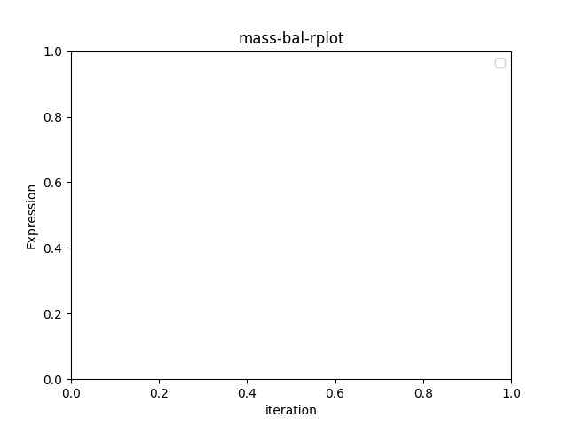
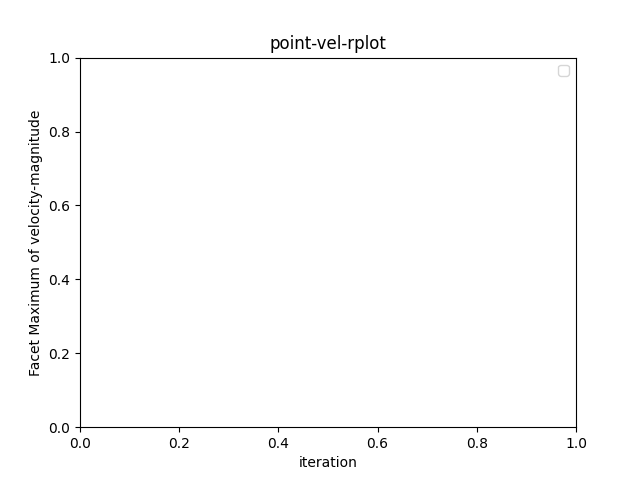

Note
Click here to download the full example code
Postprocessing using PyVista and Matplotlib#
This example demonstrates the postprocessing capabilities of PyFluent (using PyVista and Matplotlib) using a 3D model of an exhaust manifold with high temperature flows passing through. The flow through the manifold is turbulent and involves conjugate heat transfer.
This example demonstrates postprocessing using pyvista
Create surfaces for the display of 3D data.
Display filled contours of temperature on several surfaces.
Display velocity vectors.
Plot quantitative results using Matplotlib
# sphinx_gallery_thumbnail_number = -5
import ansys.fluent.core as pyfluent
from ansys.fluent.core import examples
from ansys.fluent.visualization import set_config
from ansys.fluent.visualization.matplotlib import Plots
from ansys.fluent.visualization.pyvista import Graphics
set_config(blocking=True, set_view_on_display="isometric")
First, download the case and data file and start Fluent as a service with Solver mode, double precision, number of processors: 2
import_case = examples.download_file(
filename="exhaust_system.cas.h5", directory="pyfluent/exhaust_system"
)
import_data = examples.download_file(
filename="exhaust_system.dat.h5", directory="pyfluent/exhaust_system"
)
session = pyfluent.launch_fluent(
precision="double", processor_count=2, start_transcript=False
)
session.solver.tui.file.read_case(case_file_name=import_case)
session.solver.tui.file.read_data(case_file_name=import_data)
Get the graphics object for mesh display
graphics = Graphics(session=session)
Create a graphics object for mesh display
mesh1 = graphics.Meshes["mesh-1"]
Show edges
mesh1.show_edges = True
Get the surfaces list
mesh1.surfaces_list = [
"in1",
"in2",
"in3",
"out1",
"solid_up:1",
"solid_up:1:830",
"solid_up:1:830-shadow",
]
mesh1.display("window-1")
Disable edges and display again
mesh1.show_edges = False
mesh1.display("window-2")
Create plane-surface XY plane
surf_xy_plane = graphics.Surfaces["xy-plane"]
surf_xy_plane.definition.type = "plane-surface"
plane_surface_xy = surf_xy_plane.definition.plane_surface
plane_surface_xy.z = -0.0441921
surf_xy_plane.display("window-3")

Create plane-surface YZ plane
surf_yz_plane = graphics.Surfaces["yz-plane"]
surf_yz_plane.definition.type = "plane-surface"
plane_surface_yz = surf_yz_plane.definition.plane_surface
plane_surface_yz.x = -0.174628
surf_yz_plane.display("window-4")

Create plane-surface ZX plane
surf_zx_plane = graphics.Surfaces["zx-plane"]
surf_zx_plane.definition.type = "plane-surface"
plane_surface_zx = surf_zx_plane.definition.plane_surface
plane_surface_zx.y = -0.0627297
surf_zx_plane.display("window-5")
Create iso-surface on the outlet plane
surf_outlet_plane = graphics.Surfaces["outlet-plane"]
surf_outlet_plane.definition.type = "iso-surface"
iso_surf1 = surf_outlet_plane.definition.iso_surface
iso_surf1.field = "y-coordinate"
iso_surf1.iso_value = -0.125017
surf_outlet_plane.display("window-3")
Create iso-surface on the mid-plane
surf_mid_plane_x = graphics.Surfaces["mid-plane-x"]
surf_mid_plane_x.definition.type = "iso-surface"
iso_surf2 = surf_mid_plane_x.definition.iso_surface
iso_surf2.field = "x-coordinate"
iso_surf2.iso_value = -0.174
surf_mid_plane_x.display("window-4")
Create iso-surface using the velocity magnitude
surf_vel_contour = graphics.Surfaces["surf-vel-contour"]
surf_vel_contour.definition.type = "iso-surface"
iso_surf3 = surf_vel_contour.definition.iso_surface
iso_surf3.field = "velocity-magnitude"
iso_surf3.rendering = "contour"
iso_surf3.iso_value = 0.0
surf_vel_contour.display("window-5")
Temperature contour on the mid-plane and the outlet
temperature_contour = graphics.Contours["contour-temperature"]
temperature_contour.field = "temperature"
temperature_contour.surfaces_list = ["mid-plane-x", "outlet-plane"]
temperature_contour.display("window-6")
Contour plot of temperature on the manifold
temperature_contour_manifold = graphics.Contours["contour-temperature-manifold"]
temperature_contour_manifold.field = "temperature"
temperature_contour_manifold.surfaces_list = [
"in1",
"in2",
"in3",
"out1",
"solid_up:1",
"solid_up:1:830",
]
temperature_contour_manifold.display("window-7")
Vector on a predefined surface
velocity_vector = graphics.Vectors["velocity-vector"]
velocity_vector.surfaces_list = ["solid_up:1:830"]
velocity_vector.scale = 2
velocity_vector.display("window-8")
Start the Plot Object for the session
plots_session_1 = Plots(session)
Create a default XY-Plot
xy_plot = plots_session_1.XYPlots["xy-plot"]
Set the surface on which the plot is plotted and the Y-axis function
xy_plot.surfaces_list = ["outlet"]
xy_plot.y_axis_function = "temperature"
Plot the created XY-Plot
xy_plot.plot("window-9")

Plot residual
matplotlib_plots1 = Plots(session)
residual = matplotlib_plots1.Monitors["residual"]
residual.monitor_set_name = "residual"
residual.plot("window-10")

Solve and Plot Solution Monitors.
session.solver.tui.solve.initialize.hyb_initialization()
session.solver.tui.solve.set.number_of_iterations(50)
session.solver.tui.solve.iterate()
matplotlib_plots1 = Plots(session)
mass_bal_rplot = matplotlib_plots1.Monitors["mass-bal-rplot"]
mass_bal_rplot.monitor_set_name = "mass-bal-rplot"
mass_bal_rplot.plot("window-11")
matplotlib_plots1 = Plots(session)
point_vel_rplot = matplotlib_plots1.Monitors["point-vel-rplot"]
point_vel_rplot.monitor_set_name = "point-vel-rplot"
point_vel_rplot.plot("window-12")
- 
- 
Close Fluent
session.exit()
Total running time of the script: ( 2 minutes 31.518 seconds)